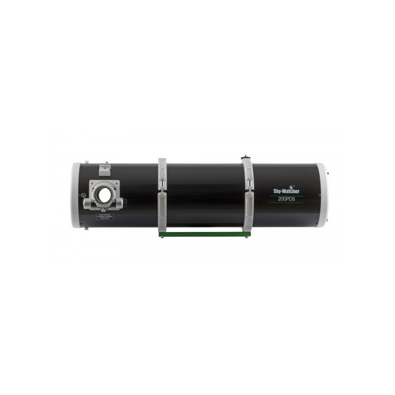
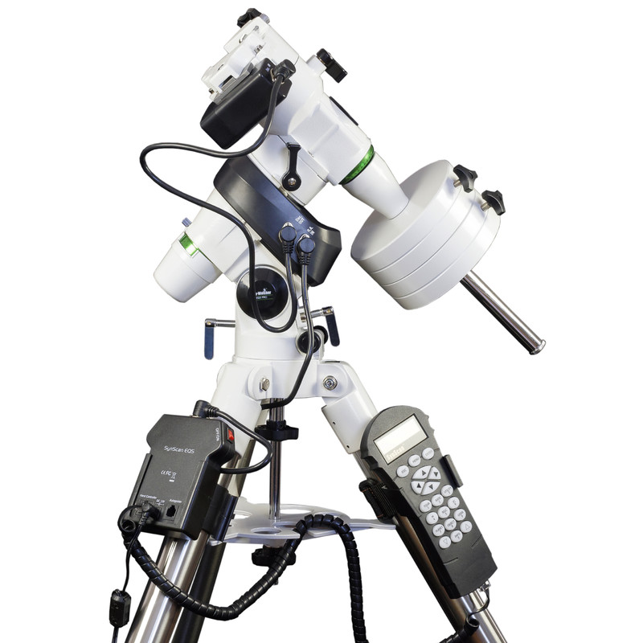
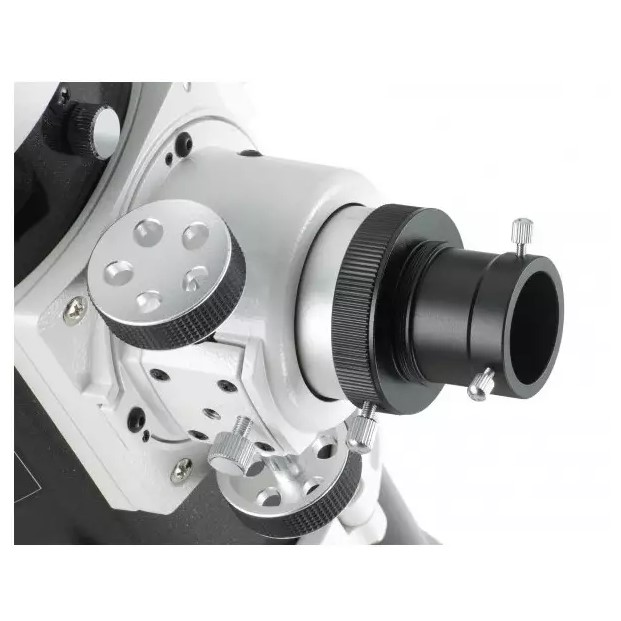
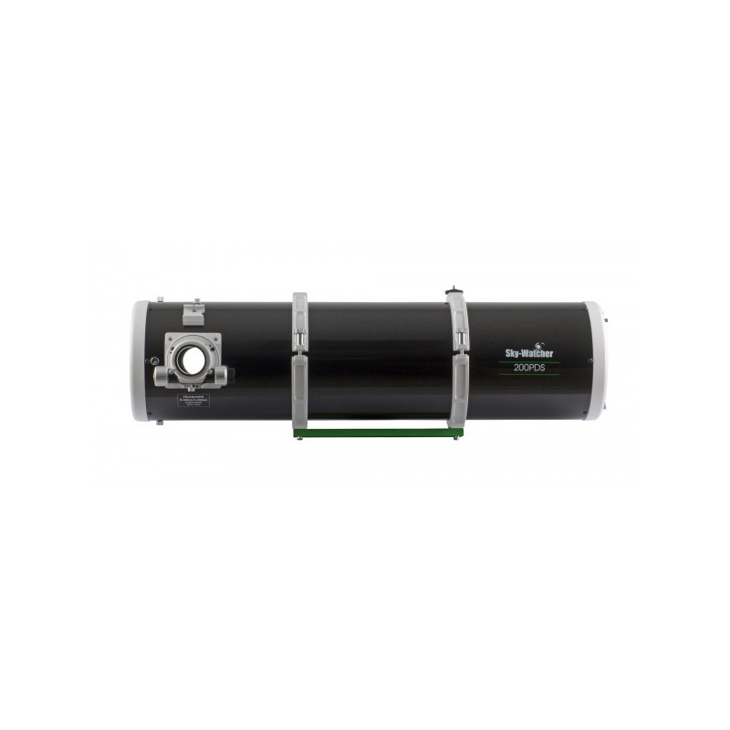
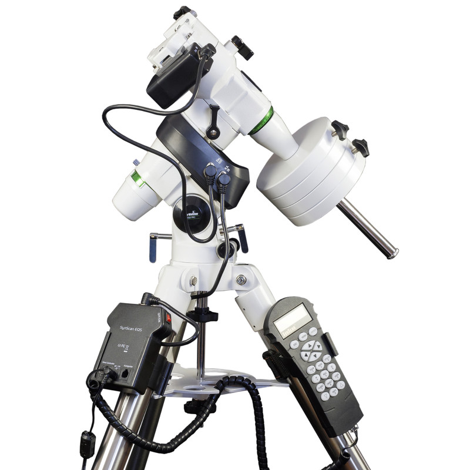
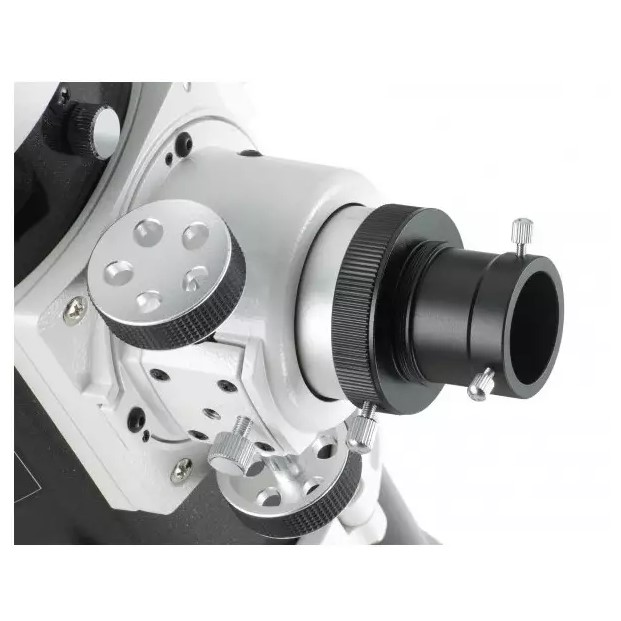

Sky-Watcher
Telescopio Sky-Watcher
200/1000 NEQ5 GoTo Black Diamond
€840,00 EUR
Impuesto incluido. Envío gratis a partir de 150€
COMPRAR AHORA
Especificaciones
| Fórmula óptica | Espejo primario parabólico de Newton
Espejo secundario plano
|
|---|---|
| Distancia focal | 1000 mm |
| Apertura | 200 mm |
| Relación focal | f/5 |
| Espejo | Pirex |
| Poder de resolución | 0.6'' |
| Magnitud límite | 13.4 |
| Construcción |
Metal
Con cola de milano y dos abrazaderas
|
| Enfocador | Observador del cielo Crayford 50.8/31.75 mm |
| Peso | 8.75 kg |
| Clae | Montura ecuatorial alemana NEQ5 con sistema de seguimiento GoTo
|
|---|---|
| Capacidad de carga |
9 kg
Capacidad de carga óptima en astrofotografía: 7.5 kg
|
| Trípode | Trípode de acero tubular reguñable en altura (71 cm a 123cm) |
| Peso |
Montura: 6 kg
Trípode: 3.8 kg
|
| Contrapeso | 2 contrapesos de 5 kg |
Articulos Entregados
Tubo óptico Newton Sky-Watcher 200mm f/5
Montura Sky-Watcher NEQ5